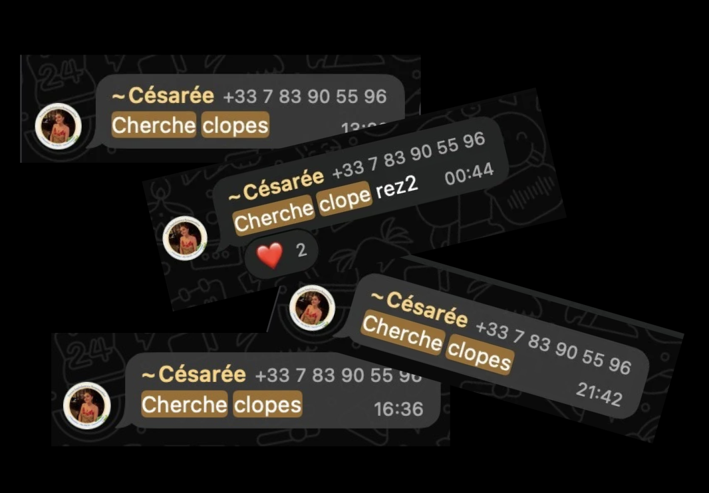
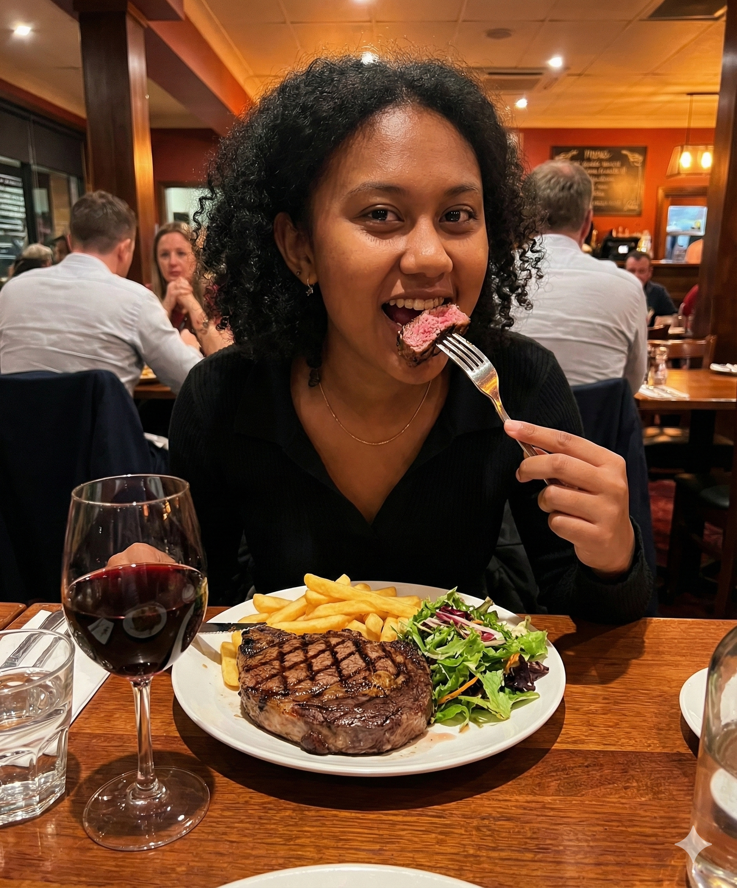
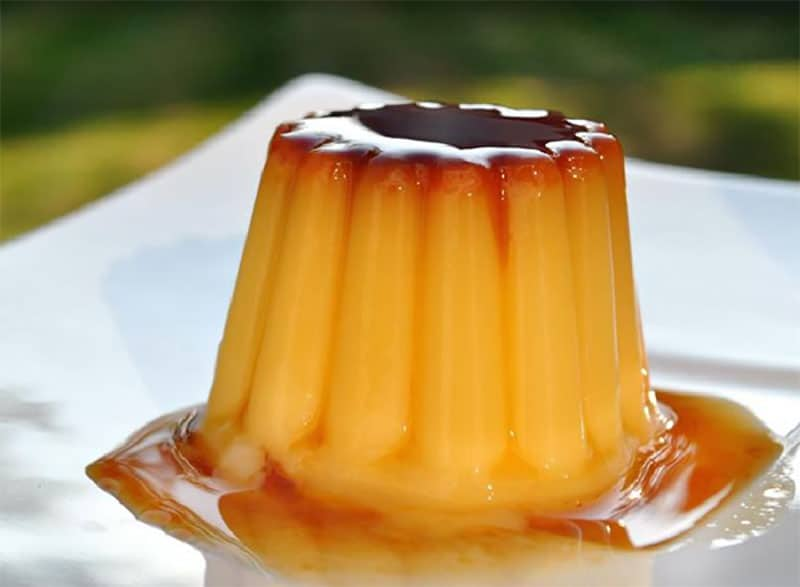

Césarée trouvera-t-elle des clopes ?
Après une longue enquête, nous avons découvert que Césarée n'a pas trouvé de clopes. En effet, malgré ses recherches intensives dans les environs de Centrale, elle n'a pas réussi à en dénicher. Cependant, elle reste optimiste et continue ses recherches...
Thomas et Camille le début d'une histoire ?
Récemment, des rumeurs circulent sur une possible relation entre Thomas et Camille. Tout serait parti d'un défi bar... Des témoins les auraient vus ensemble à plusieurs reprises depuis. Cependant, ni Thomas ni Camille n'ont confirmé ces rumeurs...
Nathan : Son bodycount enfin révélé
Après des semaines de spéculations un micro-trottoir à chatelet aura fini par trancher. Le bodycount de Nathan est bien plus elevé que celui de clément. Une source nous à précisé : "Nathan c'est un prénom de gros baiseur...!"

Jenaya aurait chopé du lard
Selon nos sources, Jenaya après une longue chasse se serait retrouvé nez à nez avec une bête sauvage et n'aurait pas hésité une seconde à en faire son quatre-heure...

Charlotte et Marc : tout ça grâce à un flamby
Lors du défi khafet, charlotte aurait apercu Marc gober un flamby comme jamais elle n'en avait vu. Une discussion autour d'un pot de sardine aurait alors permis aux deux tourtereaux de se rapprocher. En esperant qu'aucun des deux n'en avait mangé juste avant...
EXCLU : Semaine WEI chargée
Tout commenca avec SCHess qui a su enflammer le dancefloor et permis à Maia et Pradier de de se rapprocher et de tester le french kiss. Ensuite, Jenaya n'est toujours pas repue puisque elle a chopé un certain président d'une liste wei. On se demande quand son appetit se tarira...Enfin, Tara a trouvé son bonheur aupès de mael un sdf de la rez 2.
Vous avez une exclu !?
Envoyez nous un message : +33787026878